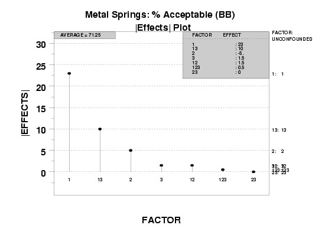

5.
Process Improvement
5.5.
Advanced topics
5.5.9.
An EDA approach to experimental design
|
|
Purpose
|
The |effects| plot answers the question:
What are the important factors (including interactions)?
Quantitatively, the question as to what is the estimated effect of
a given factor or interaction and what is its rank
relative to other factors and interactions is answered via the
least squares estimation
criterion (that is, forming effect estimates that minimize the
sum of the squared differences between the raw data and the
fitted values from such estimates). Based on such an estimation
criterion, one could then construct a tabular list of the factors
and interactions ordered by the effect magnitude.
The |effects| plot provides a graphical representation of these
ordered estimates, Pareto-style from largest to smallest.
The |effects| plot, as presented here, yields both of the above: the
plot itself, and the ranked list table. Further, the plot also
presents auxiliary confounding information, which is
necessary in forming valid conclusions for fractional factorial
designs.
|
|
Output
|
The output of the |effects| plot is:
- Primary: A ranked list of important effects (and interactions).
For full factorial designs, interactions include the full
complement of interactions at all orders; for fractional
factorial designs, interactions include only some, and
occasionally none, of the actual interactions.
- Secondary: Grouping of factors (and interactions) into two
categories: important and unimportant.
|
|
Definition
|
The |effects| plot is formed by:
The estimated effects that form the basis for the vertical axis are
optimal in the least squares sense. No other estimators exist that
will yield a smaller sum of squared deviations between the raw
data and the fitted values based on these estimates.
For both the 2k full factorial designs and
2k-p fractional factorial designs, the form
for the least squares estimate of the factor i effect,
the 2-factor interaction effect, and the multi-factor interaction
effect has the following simple form:
factor i effect =
\( \bar{Y} \)(+) - \( \bar{Y} \)(-)
2-factor interaction effect =
\( \bar{Y} \)(+) - \( \bar{Y} \)(-)
multi-factor interaction effect =
\( \bar{Y} \)(+) - \( \bar{Y} \)(-)
with
\( \bar{Y} \) (+) denoting the average of all response values for which
factor i (or the 2-factor or multi-factor interaction) takes on a
"+" value, and
\( \bar{Y} \)(-) denoting the average of all response values for which
factor i (or the 2-factor or multi-factor interaction) takes on
a "-" value.
The essence of the above simplification is that the 2-level full and
fractional factorial designs are all orthogonal in nature, and so all
off-diagonal terms in the least squares X'X matrix vanish.
|
|
Motivation
|
Because of the difference-of-means definition of the least squares
estimates, and because of the fact that all factors (and interactions)
are standardized by taking on values of -1 and +1 (simplified to
- and +), the resulting estimates are all on the same scale.
Therefore, comparing and ranking the estimates based on
magnitude makes eminently good sense.
Moreover, since the sign of each estimate is completely arbitrary and
will reverse depending on how the initial assignments were made
(e.g., we could assign "-" to treatment A and "+" to treatment
B or just as easily assign "+" to treatment A and "-" to
treatment B), forming a ranking based on magnitudes (as opposed to
signed effects) is preferred.
Given that, the ultimate and definitive ranking of factor and
interaction effects will be made based on the ranked (magnitude) list
of such least squares estimates. Such rankings are given graphically,
Pareto-style, within the plot; the rankings are given quantitatively
by the tableau in the upper right region of the plot. For the
case when we have fractional (versus full) factorial designs, the
upper right tableau also gives the confounding structure for whatever
design was used.
If a factor is important, the "+" average will be
considerably different from the "-" average, and so the absolute value
of the difference will be large. Conversely, unimportant
factors have small differences in the averages, and so the absolute
value will be small.
We choose to form a Pareto chart of such |effects|. In the Pareto
chart, the largest effects (most important factors) will be
presented first (to the left) and then progress down to the smallest
effects (least important) factors to the right.
|
|
Plot for defective springs data
|
Applying the |effects| plot to the defective springs data yields the
following plot.

|
|
How to interpret
|
From the |effects| plot, we look for the following:
- The ranked list of factors (including interactions)
is given by the left-to-right order of the spikes.
These spikes should be of decreasing height as we move
from left to right. Note the factor identifier associated
with each of these bars.
- Identify the important factors. Forming the ranked list of
factors is important, but is only half of the analysis.
The second part of the analysis is to take the ranking and
"draw the (horizontal) line" in the list and on the graph so
that factors above the line are deemed "important while factors
below the line are deemed unimportant.
Since factor effects are frequently a continuum ranging from
the very large through the moderate and down to the very
small, the separation of all such factors into two groups
(important and unimportant) may seem arbitrary and severe.
However, in practice, from both a research funding and a
modeling point of view, such a bifurcation is both common and
necessary.
From an engineering research-funding point of view, one must
frequently focus on a subset of factors for future research,
attention, and money, and thereby necessarily set aside other
factors from any further consideration. From a model-building
point of view, a final model either has a term in it or it does
not--there is no middle ground. Parsimonious models require
in-or-out decisions. It goes without saying that as soon
as we have identified the important factors, these are the
factors that will comprise our (parsimonious) good model, and
those that are declared as unimportant will not be in the model.
Given that, where does such a bifurcation line go?
There are four ways, each discussed in turn, to draw such a
line:
- Statistical significance;
- Engineering significance;
- Numerical significance; and
- Pattern significance.
The ranked list and segregation of factors derived from the |effects|
plot are to be compared with the ranked list of factors obtained in
previous steps. Invariably, there will be a considerable degree of
consistency exhibited across all of the techniques.
|
|
Conclusions for the defective springs data
|
The application of the |effects| plot to the defective springs data
set results in the following conclusions:
- Ranked list of factors (including interactions):
- X1 (most important)
- X1*X3 (next most important)
- X2
- other factors are of lesser importance
- Separation of factors into important/unimportant categories:
- Important: X1, X1*X3, and X2
- Unimportant: the remainder
|


{kind=link}